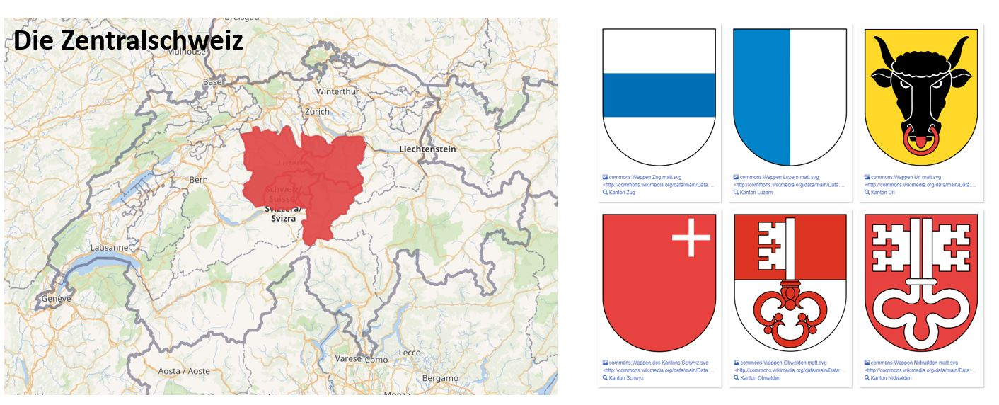
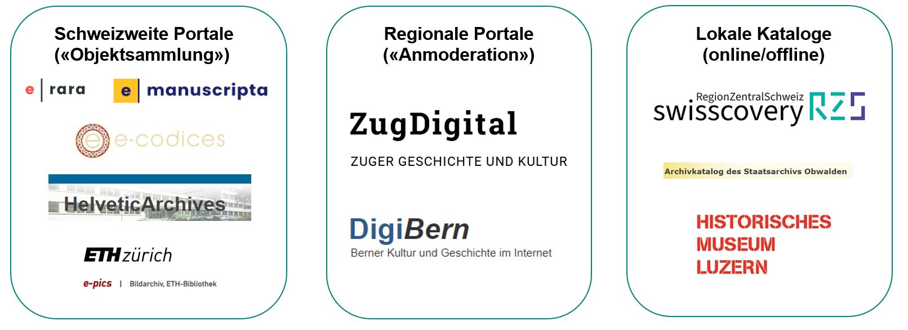
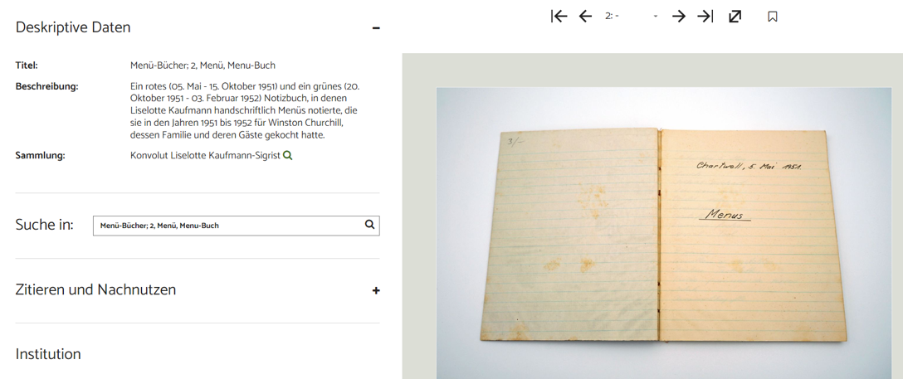
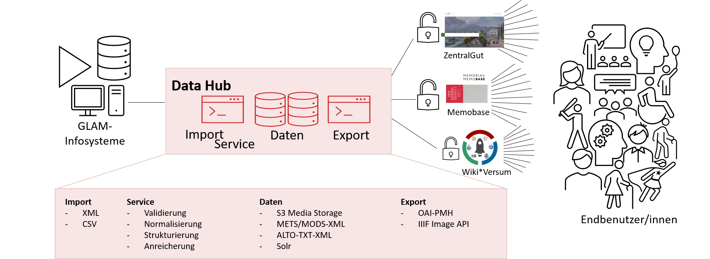
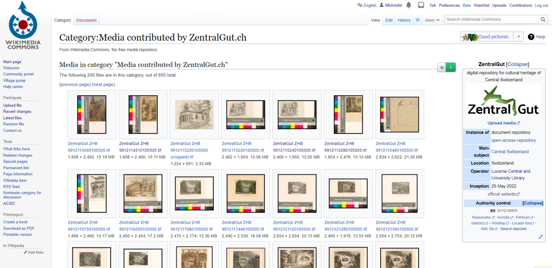

ZentralGut.ch
- Zentralschweizer OpenGLAM-Portal
Christian Erlinger

AG
Goobi -
23.03.2023
(Zentral)Schweizer (Portal-)Landschaft

(Zentral)Schweizer (Portal-)Landschaft
- Zentral- und Hochschulbibliothek Luzern
- Grösste Bibliothek der Zentralschweiz
- übernimmt bspw. innerhalb von SLSP regionale Koordination
- Aufbau eines kantonsübergreifenden Kulturgutportals
- Gemeinsamer Raum und Geschichte – getrennte Sammlungen - im Portal vereint
- Archive, Bibliotheken und Museen personell mit wenig Ressourcen ausgestattet
(Zentral)Schweizer (Portal-)Landschaft

Wie nutzen wir Goobi?
- Schriften der ZHB Luzern
- Alte Drucke und Handschriften
- Zeitungsdigitalisate (Mikrofilmscans)
- Urkunden, Protokolle, Amtsdruckschriften aus den Staatsarchiven
- Bildmaterial
- Graphiksammlung der ZHB Luzern
- Glasplatten und Postkartensammlungen
- Videomaterial
- Museale Objekte
Wie kommt Material nach ZentralGut
- Bibliographie-Import aus Alma
- Import via OAI-PMH (E-Rara, E-Manuscripta)
- Excel-Import
- Die “kleinen” Partner verfügen nicht über Programme mit standardisierten Schnittstellen
- Erlaubt Normalisierung der Daten
Neue Sicht aufs Material

Neu in Workflow - ARK
- Neues Plugin für ARK-Identifier

- Dezentral(e Community)
- Kosten(frei|günstig)
- Semantik in der PID
- Seitengenaue Adressierung ist Standard
Neu in Workflow - Zeitungssplitting
- Automatische Ausgabenerkennung auf S/W erweitert
Neu in Viewer
- Kommentargruppen
- Benutzer können zu «Gruppen» zur Bearbeitung von bestimmten Kommentaren (basierend auf SOLR-Queries) berechtigt werden.
- Upload-Formular
- Benutzer können Material im Viewer hochladen -> mit Anbindung an Goobi Workflow
Ökosystem ZentralGut

Vernetzung – «Portalkreisläufe»

Selbstgestricktes - nachnutzbar
- Wikimedia Commons Upload mit Open Refine
- python CLI Mods-Editor auf xls-Basis
- Zenodo-Upload “public archive”
Entwicklungswünsche und -pfade
- Wikidata als “Normdatei” einbetten Präsentation Goobi Days 22
- ARK-Identifier-Service muss übernommen werden
- … vieles kleineres und grösseres am Viewer